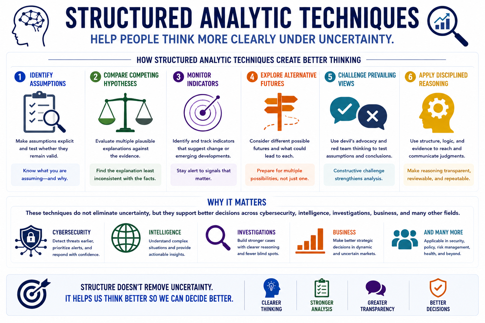

Structured Analytic Techniques
Course Summary
Connecting to LMS... Progress: in progress
Version 1.0 | Date: 2026-06-16 | Educational overview of structured analytic techniques for judgment under uncertainty.

Narration
Structured Analytic Techniques help people think more clearly under uncertainty.
By identifying assumptions, comparing competing hypotheses, monitoring indicators, exploring alternative futures, challenging prevailing views, and applying disciplined reasoning, analysts can improve the quality and transparency of their judgments.
These techniques do not eliminate uncertainty, but they support better decisions across cybersecurity, intelligence, investigations, business, and many other fields.